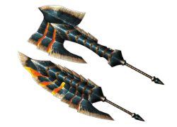
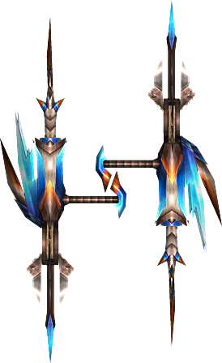

Armas
Nuestro personaje puede llevar equipado cualquier arma que queramos
dentro del juego. Por supuesto no todas las armas se usan igual, por lo que
el arma que llevará tu personaje dependerá totalmente de tu estilo de juego.
¿Te gustan las armas pesadas? La gran espada y el martillo son tus amigos para
partir cráneos.
¿Un estilo rápido? Equipate con espadas duales o la espada larga para cortar a tu
presa en trocitos y acabar la misión cuanto antes.
¿Eres más de armas a distancia? Pues una buena ballesta ligera o pesada o incluso
un arco, junto a munición (para ballesta) o flechas es lo que necesitarás.
Sea lo que sea que busques, en ésta sección hablaremos de las armas que Monster Hunter
tiene para tí, cazador.
Espadachín
Los cazadores de clase espadachín se dedican al uso de armas cuerpo a cuerpo y estas son las armas que usan:
Gran Espada
La gran espada, una espada enorme y pesada que debe de ser usada a dos manos. La capacidad de movimiento, ya sea tanto para moverte como su velocidad de ataque es lenta, pero a cambio de sacrificar tu movilidad con el arma desenvainada podrás asestar golpes cortantes muy poderosos capaces de gillotinar a tu oponente, tiene la capacidad de poder cubrirte de los ataques enemigos y de cargar tus ataques para hacer aun más daño. El bloqueo con tu gran espada no es capaz de absorber todo el daño ocasionado por el impacto por lo que se recomienda el esquivar con ésta arma, aunque en momentos dados puede que prefieras cubrirte con el arma. Es mejor recibir solo una parte del daño a todo, ¿no te parece?
Vuelve hacia arribaEspadas duales
Espadas duales, un par de espadas cortas las cuales no dificultan en absoluto a la movilidad del cazador y con la capacidad de asestar ataques veloces y arremeter sin parar contra el objetivo. No puedes realizar bloqueos con tus armas pero a cambio puedes cancelar el combo en ejecución con evasiones y con ello poder esquivar el ataque enemigo y poder continuar atacando al instante. Las espadas duales tienen otra peculiaridad especial, la cual es llamada Modo Demoníaco, la cual puede activarse al rellenar una barra de poder. La activación de dicho modo te proporciona un aumento en la velocidad de ataque y nuevos movimientos, denominado como Danza de Espadas. Durante éste modo la resistencia del cazador se irá reduciendo y el Modo Demoníaco acabará cuando la resistencia se agote o cuando decidas salir de éste modo.
Vuelve hacia arribaEspada larga
La espada larga es una espada de largo alcance y además ligera. La movilidad del cazador es media y los ataques que ejecuta son de una velocidad alta, aunque no tiene tanta velocidad como la tienen las espadas duales ni es capaz de bloquear como la gran espada, tiene un set de movimientos en los que simula los movimientos de una katana. La espada larga tiene una habilidad llamado Espada espiritual. La habilidad de Espada Espiritual es una barra que se va llenando conforme atacas al monstruo y una vez rellenado puedes acceder a los Tajos Espirituales los cuales son los movimientos más fuertes de la espada larga. Espada espiritual tiene 3 fases: Blanco, Amarillo y Rojo, siendo ésta última la más fuerte y se obtiene al ejecutar un combo y rellenando la barra, tras un tajo circular espiritual, subirá de fase. Con cada Tajo Espiritual la barra irá disminuyendo. Si se deja de combatir la barra también irá disminuyendo, en algunos juegos solo irá bajando de fase y en otros volverá a dejarte en fase Blanco.
Vuelve hacia arribaEspada y Escudo
Espada y escudo, el mejor arma para los principiantes en la saga de Monster Hunter y de las más versátiles. Éste tipo de arma es bastante ligera, teniendo la misma velocidad de movimiento y de ataque que las espadas duales, salvo por la diferencia de que llevas un escudo con el cual puedes cubrirte de la mayor parte del daño que recibas de los ataques del monstruo. Para infligir una gran cantidad de daño necesitarás de asestar múltiples ataques al igual que con las espadas duales, pero tiene una gran variedad de combos los cuales te permite realizar combinaciones de ataques bastante largos. Como ya se mencionó anteriormente, éste arma al ser tan versátil por movilidad, velocidad de ataque, bloquear y capacidad de evasión, la hace perfecta para los novatos, además de que cuenta con una particularidad la cual te permite usar objetos teniendo el arma desenfundada, cosa la cual para el resto de armas para usar objetos necesitarás enfundar el arma, perfecto para curarte y poder proseguir tu ataque.
Vuelve hacia arribaHacha Espada
La hacha espada es la primera arma de la saga en ser capaz de mutar para cambiar su forma. Éste arma empieza como hacha, la cual te da una movilidad media y su velocidad de ataque es media. Es un arma bastante potente con la cual dependiendo de la situación puedes mutar el arma y pasarla de Modo Hacha a Modo Espada. El Modo Espada simula alguna de las capacidades de la gran espada, movilidad lenta y set de movimientos. Éste modo se diferencia de la gran espada en que su velocidad de ataque es superior y cuenta con un ataque denominado Descarga Elemental, en la cual consiste en usar el revestimiento del arma para realizar un ataque cuyos efectos dependerán del tipo de revestimiento que tenga. El Modo Espada y su ataque especial son limitados, pues con el uso se irá agotando su barra de mutación, en cuanto se acabe el arma volverá a su Modo Hacha.
Vuelve hacia arribaHacha Cargada
El hacha cargada funciona de forma similar a la hacha espada. El arma tiene dos modos: Modo Espada y Escudo y su forma mutada, Modo Hacha. El Modo Espada y Escudo se maneja exactamente igual que el arma de espada y escudo, con la diferencia de que con sus ataques vas llenando el indicador de mutación y el de frascos, los cuales se usarán para los ataques especiales del Modo Hacha. La movilidad que ofrece en ambos modos es medio, en Modo Espada y Escudo sus ataques son rápidos y necesitas realizar una gran cantidad de golpes para realiar grandes cantidades de daño y el Modo Hacha tiene una velocidad de ataque y movimiento medios, el cual sus ataques especiales son ataques de Descarga Elemental los cuales funcionan exactamente igual al Modo Espada del hacha espada.
Vuelve hacia arribaMartillo
El martillo es junto a la gran espada, de las armas más pesadas de todo el juego. Su tipo de daño al contrario que todas las anteriores mencionadas que son de corte, el daño del martillo es de impacto (el tipo de daño es importante en Monster Hunter, pues dependiendo del monstruo al que enfrentemos y de sus partes será más vulnerable a cortes, impactos, golpes perforantes y elemental). Al ser un arma pesada, la movilidad del cazador es muy reducida y la velocidad de ataque con éste arma es muy bajo. Sin embargo, lo compensa con la capacidad de generar muchísimo daño con sus golpes los cuales pueden cargarse a cambio de resistencia para que el movimiento sea aun más poderoso.
Vuelve hacia arribaLanza
La lanza es de las armas más dificiles de dominar de todo el juego debido a sus dificultades para esquivar, moverse y su cantidad de combos es bastante limitada. Sin embargo es el arma cuerpo a cuerpo con más alcance, es capaz de hacer buen daño, tiene la mejor capacidad de bloqueo junto a la lanza pistola al llevar también un escudo enorme y tiene la particularidad de poder atacar al enemigo incluso mientras estás cubierto y realizar ataques en carga. Los ataques con lanza pueden realizarse desde diferentes alturas: media altura y alta altura, ésta capacidad puede llegar a ser útil contra monstruos con la capacidad de volar y que se mantengan en el aire.
Vuelve hacia arribaLanza pistola
La lanza pistola es simplemente, una lanza con un mecanismo de disparo. El estilo de juego es exactamente el mismo, pero con la adición de ser capaz de realizar explosiones mediante su capacidad de disparo y de su habilidad Fuego Wyvern proporcionado por le mecanismo de disparo. Mediante el uso de munición puedes realizar disparos de corta distancia y puedes combinarlos con tus ataques de lanza pero teniendo cierto cuidado, pues el arma puede llegar a sobrecalentarse y deberás de esperar un tiempo para poder volver a disparar. Al igual que la lanza, posee grandes capacidades de bloqueo pero con la contra de que la evasión es muy reducida y es muy dificil de dominar.
Vuelve hacia arribaGlaive Insecto
El glaive insecto, o bastón insecto es un arma cuyo uso es el de un bastón con una alta velocidad de ataque, el cual es usado además de para atacar al objetivo, controlar a un insecto el cual es llamado con Kinsecto para que ataque al monstruo, pero si queremos que haga eso, deberemos de disparar a través del bastón unas feromonas para que nuestro amigo insecto pelee. Existen varios tipos de Kinsecto los cuales se diferencian entre ellos por sus estadísticas, el tipo de daño que realizan y su habilidad especial. Nuestro insecto no solo se usa para atacar, sino también para recolectar esencias las cuales podemos usar para recibir bonificaciones de daño, defensa, velocidad o alguna habilidad que aumente nuestras posibilidades de salir airosos del combate. Al igual que el arma, podemos hacer evolucionar nuestro Kinsecto para que sea aun más poderoso mediante la recolección de materiales.
Vuelve hacia arribaCuerno de caza
Piensa en un martillo, pero con la capacidad de tocarlo cual instrumento musical, así es como resumiría el cuerno de caza. Éste arma tiene el mismo set de movimientos que un martillo, movilidad lenta y ataques lentos, solo que sus ataques no pueden ser cargados pero en cambio, el cuerno de caza puede usarse para entonar notas las cuales combinadas otorgan diversos beneficios al cazador como aumentar el ataque, la defensa, la velocidad, la resistencia a los efectos climáticos como el frío y el calor, recuperar nuestra salud o aumentar la resistencia a ataques elementales o a efectos alterados (parálisis, sueño, congelado... etc). Éste arma es muy útil para realizar la labor de soporte en las partidas multijugador, pues todos los beneficios son aplicados a todos los cazadores presentes en la zona.
Vuelve hacia arribaTonfa
Los tonfas son armas de puño con un sistema de propulsión los cuales hacen de tus golpes más poderosos y rápidos, el cual para usarlo se deberá de rellenar una barra indicadora, los Golpes Propulsados funcionan exactamente igual que los Tajos Espirituales de la espada larga. El sistema de propulsión además proporciona a nuestro cazador una amplia movilidad, permitiéndole realizar evasiones o incluso impulsarse hacia arriba para poder realizar ataques aéreos. Los tonfas tienen los modos distintos los cuales comparten set de movimiento y golpes propulsados pero se diferencian en lo que es capaz de hacer cada modo. Los modos son:
- Modo Normal:Los ataques son de impacto. Al final del combo, el cazador realizará el ataque cargado, y en el aire, el botón de ataque secundario realizará un ataque giratorio.
- Modo Corto:Los ataques son perforadores. Al final del combo, se puede realizar una serie de ataques rápidos y cortos. En el aire, el cazador realizará un salto doble para permanecer en el aire y atacar al monstruo.
Otra peculiaridad de los tonfas es que también pueden ser usados para realizar bloqueos como los que se podría realizar con espada y escudo, haciendo de éste arma una muy versátil.
Vuelve hacia arribaArtillero
La clase artillero se especializa en en armas de ataque a distancia la cual emplea munición como las ballestas tiene la particularidad de que sus piezas son intercambiables. Las armas dentro de ésta clase son:
Arco
El arco es una de las armas más tácticas de la Saga Monster Hunter. Compuesta por un arco y un carcaj.
A pesar de ser un arma versátil con gran multitud de opciones, no es el arma idónea para cazadores novatos ya que necesita habilidad. Es un arma rápida;
disparar y correr es una táctica común al usar el arco. Para su buen uso es necesario también conocer los puntos débiles del monstruo y sus debilidades
elementales para poder derrotarlo. Esto no es un probema, ya que hay una gran cantidad de elementos para elegir.
Por último, el uso de cargas y revestimientos ofrece muchas posibilidades. Es muy importante saber que cargas y revestimientos usará el cazador.
Las habilidades de armadura también son importantes para un arquero. No es lo mismo habilidades de ballesta que de arco. Algunas son una excepción,
como Auto Recarga. Sólo hace falta llevar los recubrimientos en el inventario para usarlos. Otra habilidad útil es Hambre, que reduce la velocidad en la
que se reduce la resistencia, para así tener más tiempo para calcular el disparo.
Otra buena habilidad es Atq. Elem. que aumenta la potencia de ataques elementales, o Atq. EstAn. que potencia los ataques de Parálisis, Veneno y Sueño.
Ballesta ligera
Existen tres tipos de ballestas en el juego según su peso, en éste caso se describirá la ballesta ligera. La ballesta ligera es apta para los iniciados en ésta clase debido a su peso ligero permitiendo una buena movilidad, alta cadencia de fuego por su habilidad Fuego Rápido y bajo retroceso pero su capacidad de daño es muy baja.
Vuelve hacia arribaBallesta mediana
La ballesta mediana es un balance entre la ballesta pesada y la ballesta ligera. A cambio de un movimiento más lento, tiene más poder que una Ballesta Ligera. Y a cambio de no poseer escudo, posee mejores movimientos de evasión que una Ballesta Pesada. Posee un disparo de fuego rápido similar al de la ballesta ligera, pero sin disparar tantas balas. Algunas son plegables, por lo que tardarán más en enfundarse y desenfundarse que una ballesta normal.
Vuelve hacia arribaBallesta pesada

La ballesta pesada es un arma a distancia con gran potencia de disparo, perfecta para aquellos que desean infligir el máximo daño a distancia. Su gran tamaño permite llevar gran cantidad de munición y como arma potente, su grandeza reside en su potencia bruta, mediante disparos de Grupo, Explosivos y Perdigones. Sin embargo su lentitud de recarga, disparo y movimiento, además de su difícil manejo, hace que no sea un arma muy popular entre cazadores. En cacerías de grupo, la ballesta pesada es un arma más ofensiva, capaz de infligir un daño considerable con pocos ataques, mientras que la ballesta ligera es más de apoyo. Ésta ballesta te permite equiparle un escudo el cual puedes usar para bloquear los ataques de los monstruos.
Vuelve hacia arriba